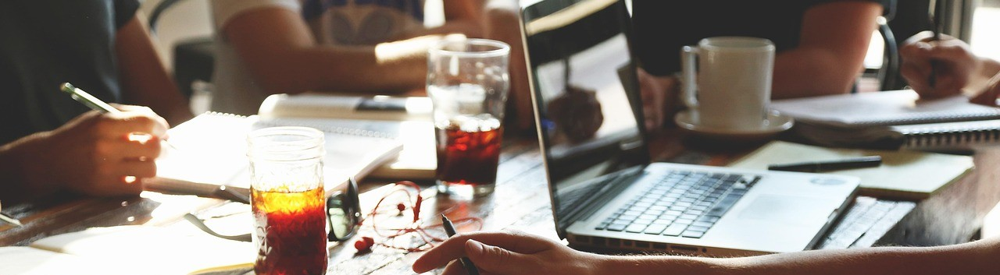
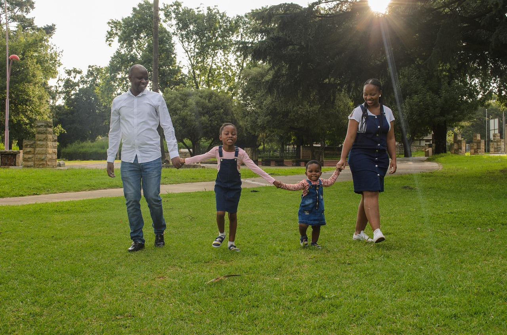
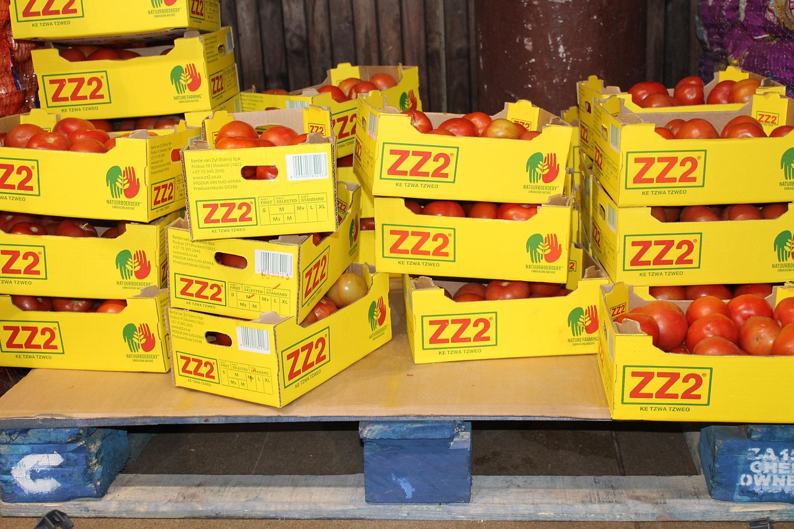

Projects Overview
The Midlands Tech Food Drive is built on a series of community-driven projects that bring people together to fight hunger. Each initiative focuses on collecting food, raising awareness, and supporting families in need across our region. From seasonal drives to volunteer days and outreach events, our projects highlight the power of teamwork and compassion.
On this page, you’ll find details about our current efforts, stories from past projects, and a look ahead at future initiatives. Whether you’re donating, volunteering, or simply learning more, your involvement helps ensure that no one in our community goes hungry.
Holiday Food Drive
Collecting canned goods to support families during the holiday season.
Impact: 1,200 lbs of food collected so far!
DonateSummer Volunteer Day
Volunteers sorted and packaged donations for 300 families.
Impact: 500 volunteer hours logged.
Community Impact
Families Served
Since the beginning of January 2025, we have served over 5K families in need across the midlands area!

Pounds of Food Collected
So far, roughly 100,000 pounds have been donated through our volunteers, events, and fundraisers!

Volunteer Hours Logged
We have logged over 500 hours of volunteers that help with all of our projects and events!